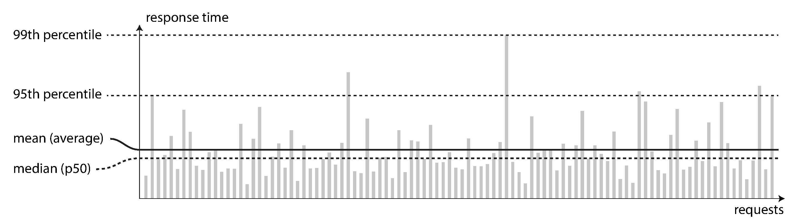

Latency و response time اغلب مترادف استفاده میشوند، اما یکسان نیستند. response time چیزی است که client میبیند: علاوه بر زمان واقعی برای پردازش درخواست (زمان service)، شامل تأخیرهای شبکه و تأخیرهای صف نیز میشود. Latency، مدت زمانی است که یک درخواست منتظر است تا رسیدگی شود—در این مدت نهفته است و منتظر service است [17].
حتی اگر شما فقط یک درخواست را بارها و بارها انجام دهید، در هر بار کمی response time متفاوتی دریافت خواهید کرد. در عمل، در یک سیستم که انواع درخواستها را مدیریت میکند، response time میتواند بسیار متفاوت باشد. بنابراین ما باید در مورد response time نه بهعنوان یک عدد واحد، بلکه بهعنوان توزیعی از مقادیری که میتوانید اندازهگیری کنید، فکر کنیم.
در شکل 1-4، هر میله خاکستری نشاندهنده یک درخواست به یک service است و ارتفاع آن نشان میدهد که آن درخواست چقدر طول کشیده است. اکثر درخواستها نسبتاً سریع هستند، اما استثناهایی وجود دارد که زمان بیشتری میبرند. شاید درخواستهای کندتر ذاتا گرانتر باشند، بهعنوانمثال، زیرا آنها data بیشتری را پردازش میکنند. اما حتی در سناریویی که فکر میکنید همه درخواستها باید زمان یکسانی را ببرند، تنوعی وجود دارد: تأخیر اضافی تصادفی میتواند با یک context switch به یک فرآیند پسزمینه، از دست رفتن یک بسته شبکه و انتقال مجدد TCP، مکث جمعآوری garbage، یک خطای صفحه که خواندن از دیسک را مجبور میکند، ارتعاشات مکانیکی در قفسه سرور [18] یا بسیاری از علل دیگر ایجاد شود.
شکل 1-4. نشان دادن میانگین و percentiles: زمان پاسخ برای نمونهای از 100 درخواست به یک service.
معمول است که average response time یک service گزارش شود. (دقیقاً، اصطلاح "میانگین" به هیچ فرمول خاصی اشاره ندارد، اما در عمل معمولاً بهعنوان میانگین حسابی درک میشود: با توجه به n مقدار، تمام مقادیر را جمع کنید و بر n تقسیم کنید.) با این حال، اگر میخواهید response time "معمول" خود را بدانید، میانگین یک معیار خیلی خوب نیست، زیرا به شما نمیگوید که چند کاربر در واقع آن تأخیر را تجربه کردهاند.
معمولاً بهتر است از percentiles استفاده کنید. اگر لیست response time خود را بگیرید و آن را از سریعترین تا کندترین مرتب کنید، سپس میانه نقطه میانی است: بهعنوانمثال، اگر شما
14 | Chapter 1: Reliable, Scalable, and Maintainable Applications